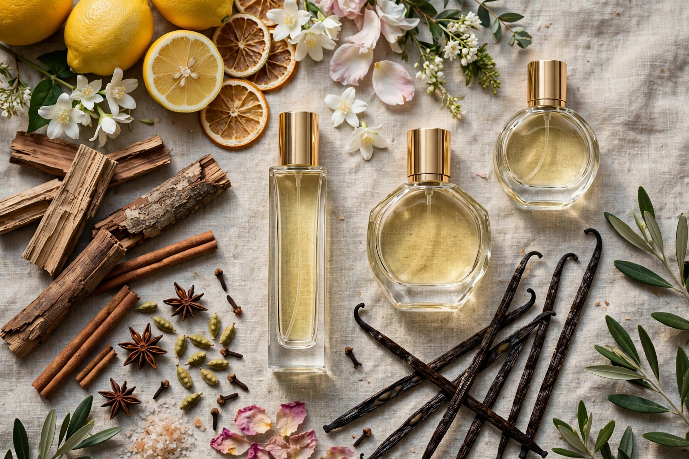

أدلة العطور
الدليل الكامل للعائلات العطرية
حمضية، زهرية، خشبية، شرقية... العائلات العطرية هي خريطة عالم العطور. تعلّم قراءتها وستختار أفضل إلى الأبد.

حين يقول أحد «تعجبني العطور المنعشة» أو «أفضّل شيئًا حلوًا»، فهو يتحدث، دون أن يدري، عن العائلات العطرية. العائلات هي طريقة صناعة العطور في تصنيف العطور بحسب شخصيتها الغالبة. معرفتها كتعلّم أنواع السينما: ما إن تتقنها حتى تعرف بالضبط ما تبحث عنه.
توجد تصنيفات عديدة، لكن أحد الكلاسيكية يعترف بسبع عائلات كبرى. لنستعرضها واحدة واحدة.
الحمضية: انتعاش فوري
إنها العطور المبنية حول البرغموت والليمون والبرتقال والجريب فروت أو اليوسفي. تنقل النظافة والطاقة والإشراق. إنها الاختيار الأول للحرّ والرياضة وكل الأيام.
نقطة ضعفها هي الثبات: جزيئات الحمضيات متطايرة وتتبخر بسرعة، فكثير من الحمضيات النقية لا يدوم إلا ساعات قليلة على الجلد. لهذا تجدها غالبًا ممزوجة بنوتات خشبية أو عطرية تمنحها جسدًا.
الزهرية: قلب صناعة العطور
العائلة الأكبر والأكثر تنوعًا. تمتد من الياسمين والورد الكلاسيكيين إلى الزهور البيضاء كزهر البرتقال ومسك الروم والغاردينيا، مرورًا بالزهور البودرية كالبنفسج أو السوسن. قد يكون الزهري منعشًا وربيعيًا أو كثيفًا وحسيًا، بحسب الزهور المختارة.
تهيمن الزهريات على العطور النسائية التقليدية، لكنها تظهر أيضًا في عطور حديثة للجنسين ورجالية، حيث تمتزج بالأخشاب أو البهارات لنتيجة معاصرة.
الخشبية: أناقة صلبة
الأرز والصندل والفيتيفر والباتشولي والعود... الأخشاب تضفي العمق والدفء والرقي. إنها العمود الفقري لعطور رجالية كثيرة ولجزء كبير من النيش للجنسين.
عادة ما تتمتع الأخشاب بثبات جيد وانتشار أنيق، دون أن تكون عدوانية. تنجح كثيرًا في المكتب وفي الخريف والشتاء وفي المناسبات التي تريد فيها بثّ الثقة.
الشرقية: الدفء والفخامة
تُسمى أيضًا العنبرية، وتُبنى بالفانيليا والعنبر وحبة التونكا والبهارات والراتنجات والبخور. دافئة ومغلّفة وغالبًا حلوة. فكّر في ليالي الشتاء والعشاءات الأنيقة واللحظات الحميمية.
إنها العطور ذات الحضور الأكبر: تنتشر كثيرًا وتدوم ساعات. لذا يجب جرعها بعناية، خاصة في الأماكن المغلقة أو الأجواء الحارة، حيث قد تكون مربكة.
الفوجير: الكلاسيكي الرجالي
اسمها يعني «السرخس» بالفرنسية. وُلدت من مزيج تاريخي: الخزامى والكومارين (رائحة التبن الحلو) وطحلب البلوط والأخشاب. إنها عائلة الحلّاق الكلاسيكي، و«رائحة النظافة والرجولة» الأبدية.
رغم أنها وُلدت عائلة رجالية، تظهر مكوناتها اليوم في عطور من كل نوع. إن كنت تحب العطور المنعشة ذات الشخصية، فغالبًا أنت تحب الفوجير دون أن تدري.
الشيبر: رقيّ التناقضات
يجمع الشيبر الكلاسيكي افتتاحية حمضية (برغموت غالبًا) مع قلب زهري وقاعدة من طحلب البلوط والباتشولي. التناقض بين الانتعاش الأولي وعمق القاعدة يخلق أناقة مميزة جدًا، عتيقة قليلًا لكن خالدة.
إنها عائلة أقل انتشارًا اليوم منها قبل عقود قليلة، لكنها ما زالت حيّة في عطور النيش وفي كلاسيكيات معينة لا تخرج من الموضة أبدًا.
الغورماند: عطور «تُؤكل»
العائلة الأصغر سنًا: وُلدت في التسعينيات، بعطور تشمّ بالفانيليا والكراميل والشوكولاتة والقهوة وغزل البنات والفواكه الحلوة. تسبب الإدمان، وتمنح الراحة، ومحبوبة جدًا، خاصة لدى الجمهور الشاب.
حلاوتها تجعلها مثالية للبرد والمساء، لكن مع الحرّ أو في المكتب الأفضل استخدامها باعتدال.
وماذا لو مزج عطرٌ أكثر من عائلة؟
معظم العطور الحديثة لا تنتمي إلى عائلة واحدة بصيغتها النقية: إنها مزائج. عطر ما قد يكون «زهريًا-خشبيًا» أو «حمضيًا-عطريًا». العائلات نقاط مرجعية، لا أدراج مغلقة.
إضافة إلى ذلك، توجد داخل كل عائلة فروع وفروق لا نهائية. عطران «شرقيان» قد لا يتشابهان أبدًا. لهذا العائلات هي الخريطة، لا الأرض: توجّهك، لكن الفصل النهائي دائمًا لأنفك.
تمرين عملي
اختر ثلاثة عطور تملكها وتحبها. ابحث إلى أي عائلة ينتمي كل منها. إن وقع اثنان أو ثلاثة في العائلة نفسها، فقد اكتشفت للتو تفضيلك الغالب. من هناك، اطلب ترشيحات داخل تلك العائلة وستصيب أكثر بكثير.
العائلات والجنس: خريطة تتغير
تاريخيًا ارتبطت بعض العائلات بجنس ما: الزهرية بالنسائي، والفوجير والخشبية بالرجالي. هذا الفصل يختفي بسرعة. اليوم من الطبيعي أن تجد الورد في عطور رجالية والعود في النسائية، وعطور النيش يلعب قصدًا بهذه الحدود.
نصيحتي: تجاهل الجنس المعلن على الزجاجة وثق بالعائلة وبأنفك. إن أحببت الزهريات، لا يهم ما تقوله البطاقة. العائلات تصف الرائحة؛ والتسويق يصف لمن يُراد بيعه.
كيف تتحدث عن العطور بفضل العائلات
معرفة العائلات تمنحك أيضًا لغة. بدل أن تقول «هذا يعجبني، لا أعرف لماذا»، ستستطيع أن تقول «تعجبني الأخشاب القائمة على الفيتيفر» أو «أبحث عن شرقي رقيق، ليس حلوًا جدًا». تغيّر الحوار تمامًا مع البائع أو من ينصحك: تنتقل من العشوائية إلى الوصف الدقيق لما تبحث عنه.
دوّن عائلات عطورك الخمسة المفضلة واحتفظ بها في هاتفك. إنها أسرع طريقة لينصحك أحد بشيء سيعجبك حقًا.
تريد الترشيح المثالي كل صباح؟
ينظّم Aromario مجموعتك ويقترح عليك العطر المثالي بحسب الطقس وبرنامج يومك. مجانًا لأندرويد.
اكتشف Aromario